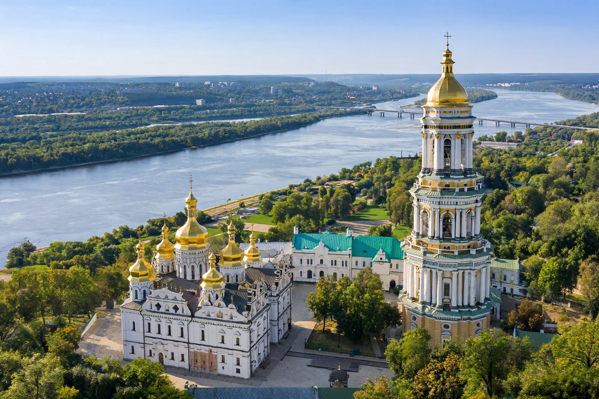

Ukraine

Ukraine is a country in Eastern Europe, the second-largest by area in Europe after Russia, bordered by Russia, Belarus, Poland, Slovakia, Hungary, Romania, Moldova and the Black Sea. Its capital and largest city is Kyiv.
History
A centre of the medieval Kyivan Rus', Ukraine came under successive Russian, Polish-Lithuanian, Austro-Hungarian and Soviet rule, declaring independence from the Soviet Union in 1991. The 2013–14 Euromaidan protests and Revolution of Dignity turned the country toward the European Union, followed by Russia's annexation of Crimea, war in the Donbas and the full-scale 2022 invasion.
Geography and culture
Ukraine is known for fertile steppe farmland — a major grain exporter — the Carpathian mountains in the west and Black Sea ports such as Odesa. Its language is Ukrainian, closely related to Russian and Belarusian.